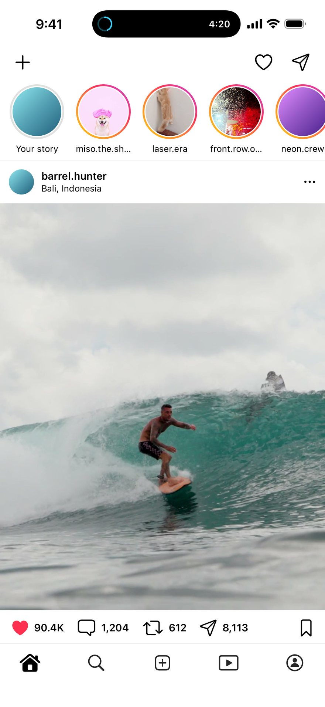
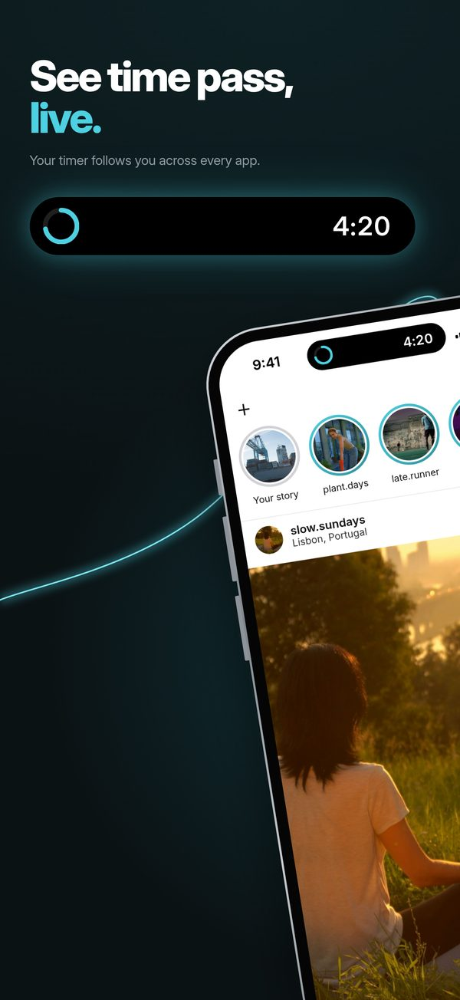
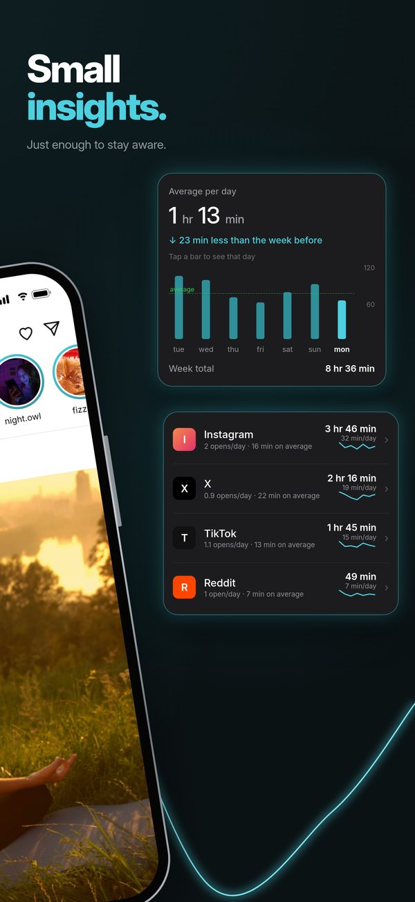
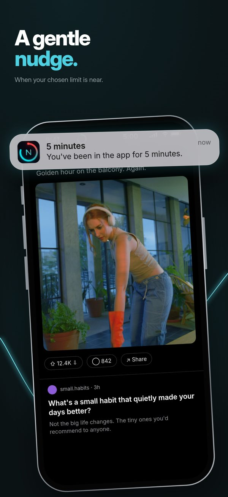
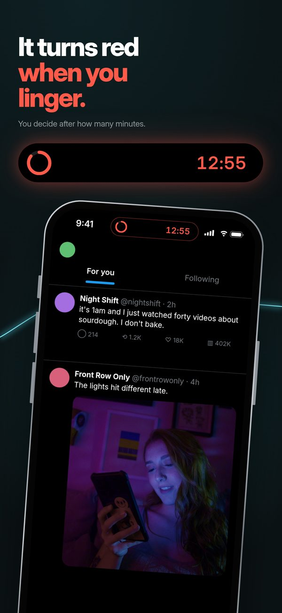
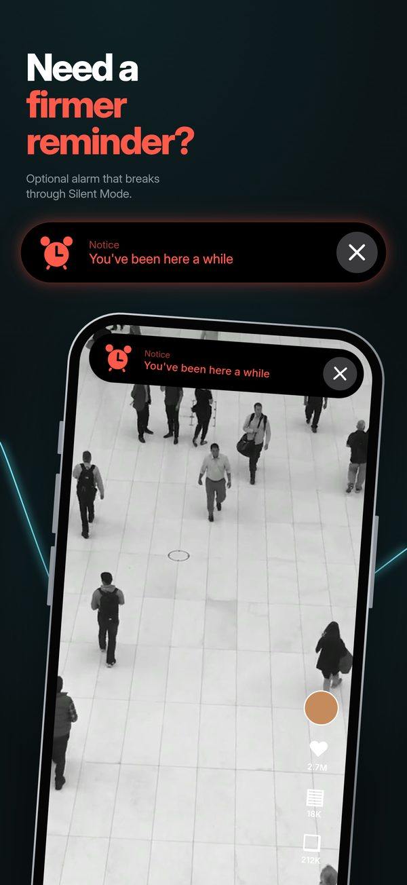
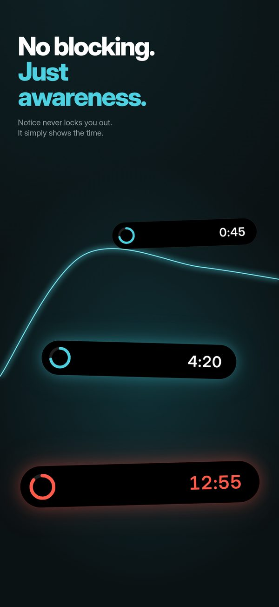
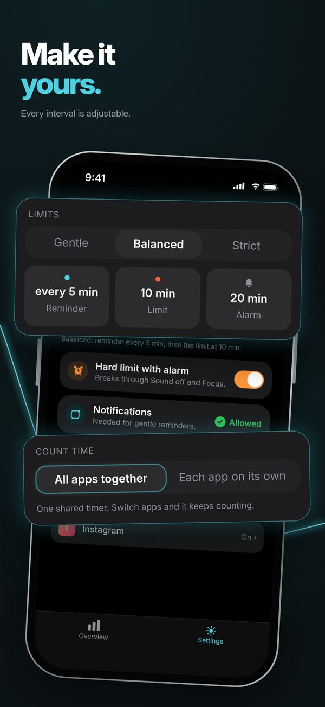
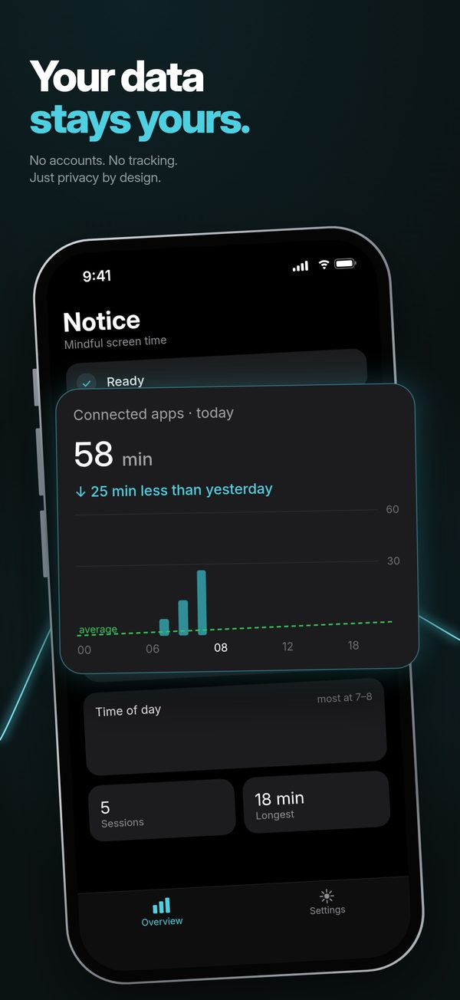

Notice · Mindful screen time
Notice · Mindful screen time
Notice the minutes while you scroll.
- TikTok
- YouTube
- or any other app
Notice puts a live timer at the top of the screen while you’re still in the app. It doesn’t block anything. You see the minutes add up, and you decide when it’s enough.
- Free
- No account
- Nothing leaves your iPhone
- iOS 18.2 and later
See time pass. Live.
A nudge, then red, then an alarm if you want one.
Keep scrolling and the minutes pass, sped up. A nudge at 5, red at 10, an alarm at 20 if you want one.
-
0min
The timer starts
Open Instagram, TikTok, YouTube or any other app you connected. A small timer appears at the top of the screen. Leave the app and it pauses.
-
5min
A nudge
A notification every 5 minutes:
You’ve been in the app for 5 minutes.
-
10min
It turns red when you linger
When you reach your limit, the timer turns red so you see it at a glance.
-
20min
Need a firmer reminder?
An optional hard limit with an alarm that breaks through Silent Mode and Focus. Turn it off anytime. Needs iOS 26.1 or later.

0:00 in Instagram
In the app, these times are called Balanced. Mild waits longer, at 10, 20 and 30 minutes. Strict is sooner, at 2, 5 and 10. You pick one in Settings. On iPhone 14 Pro and later the timer sits in the Dynamic Island; on other models it shows on the Lock Screen.
While you’re in the app
The minutes, while you’re still in the app.
Most screen time tools either stop you before you open an app, or show you a chart afterwards. Notice shows the time while it’s passing, and the choice stays yours.
-
Before
A blocker
Stops you before you open an app.
-
While it happens
Notice
A live timer while you’re in the app. You see the time pass and decide when it’s enough.
-
After
A report
A chart of the time, once it’s already gone.
How it works
Connect an app once. Then it runs by itself.
iPhone doesn’t let one app watch another, so Notice connects through Apple’s Shortcuts app: a ready-made shortcut and one automation.
-
Step 1
Add the ready-made shortcut
Notice gives you the shortcut and a short picture guide, right in onboarding.
-
Step 2
Make one automation
In Shortcuts, one automation runs it when you open an app you chose, like Instagram, TikTok or YouTube. You can add more apps anytime.
-
Step 3
Then it’s automatic
Open a connected app and the timer starts counting. Leave, and it pauses.
Inside the app
Small numbers, not a report card.
Notice keeps today’s totals for the apps you connected: time spent, number of sessions and your longest session. Tap through the preview.
- Start a session and watch it count. Stop it and today’s totals update.
- Open Settings and pick Mild, Balanced or Strict. Balanced is the demo above: a nudge every 5 minutes, red at 10, alarm at 20.
- Count time your way: one shared timer for all apps, or a separate timer for each app.
Notice
Mindful screen time
Settings
One timer for all your connected apps. Switch apps and it keeps counting.
Runs 20× faster than real time, with sample data. A web recreation, not the app itself.
Privacy
Your data stays yours.
No account, nothing leaves your iPhone, Notice only knows the apps you connect. The App Store privacy label says Data Not Collected. Read the privacy policy.
No account
No sign-up and no login. Open the app and connect an app.
Nothing leaves your iPhone
Your stats are stored on your iPhone and nothing is sent anywhere. No analytics, no ads. Deleting the app deletes them.
Only the apps you connect
You choose them in Shortcuts. Notice only knows the apps you connect.
On the App Store
Screenshots








FAQ
Questions
Does Notice block apps?
No. Notice never stops you from using an app. It shows the time, sends a nudge, and can sound an alarm if you turn that on. What you do next is up to you.
If Notice doesn’t block anything, how does it help?
It shows the time while you’re still in the app, not in a report afterwards. You see the timer count, get a nudge, and see it turn red when you pass your limit. If you want something firmer, you can turn on the hard-limit alarm.
How does Notice know when I open an app?
Through Apple’s Shortcuts app. Notice gives you a ready-made shortcut, and one Shortcuts automation runs it when you open an app you chose. A short picture guide in the app walks you through it.
Does Notice need access to my Screen Time data?
No. Notice doesn’t use Apple’s Screen Time or Family Controls APIs and doesn’t ask for your Screen Time data. It asks for Notifications, Live Activities and, only if you want the hard-limit alarm, Alarms.
Which iPhones does it work on?
iOS 18.2 and later. The live timer appears in the Dynamic Island on iPhone 14 Pro and later, and on the Lock Screen on other models. The hard-limit alarm needs iOS 26.1 or later.
What do Mild, Balanced and Strict change?
How often you’re reminded, when the timer turns red, and when the alarm goes off. Balanced reminds you every 5 minutes, turns red at 10 and sounds the alarm at 20. Mild is 10, 20 and 30; Strict is 2, 5 and 10. The alarm can be turned off.
One timer, or one per app?
Your choice. With one shared timer, switching between connected apps keeps the same count going. With one per app, each app counts on its own.
What does it cost? Do I need an account?
Notice is free on the App Store, and there’s no account or sign-up.
Is there an Android version?
Not yet. An Android version is on the way, for Android 8.0 and later. On Android the timer is a floating bubble you can move around, with an optional pill around the punch-hole camera, plus an ongoing notification with a Stop button. Privacy is the same: no account, no ads, and the app doesn’t even have internet permission.
Which languages does it support?
English, Swedish, Spanish, French, German, Portuguese, Simplified Chinese, Russian and Arabic.
Something isn’t working.
See the support page or email Noticemindfullscreentime@gmail.com.
See the time while it passes.
Free on the App Store. No account, and nothing leaves your iPhone.
For iPhone with iOS 18.2 or later. An Android version is on the way.